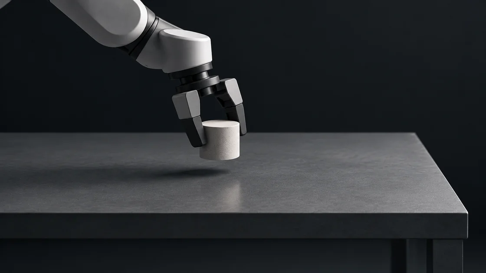
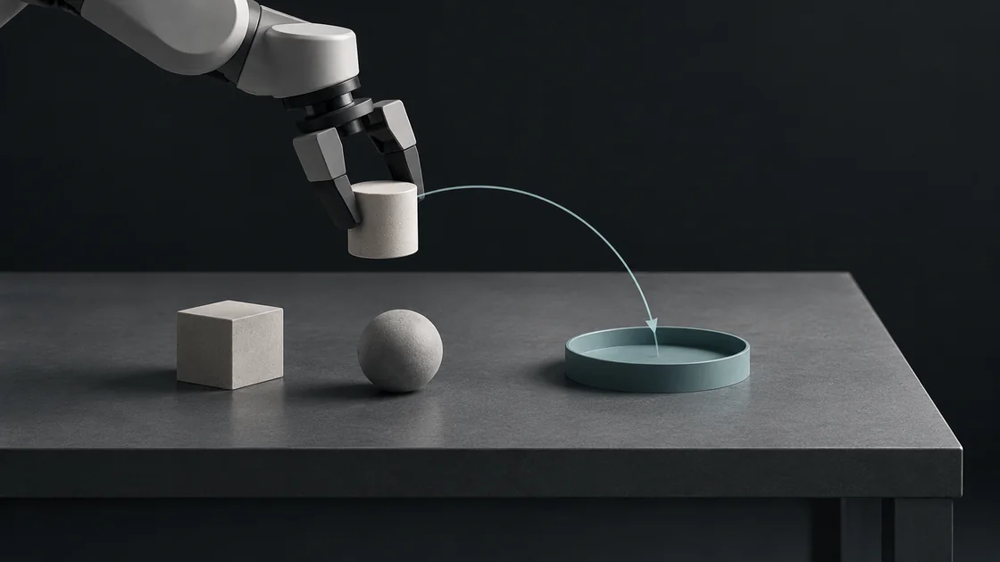
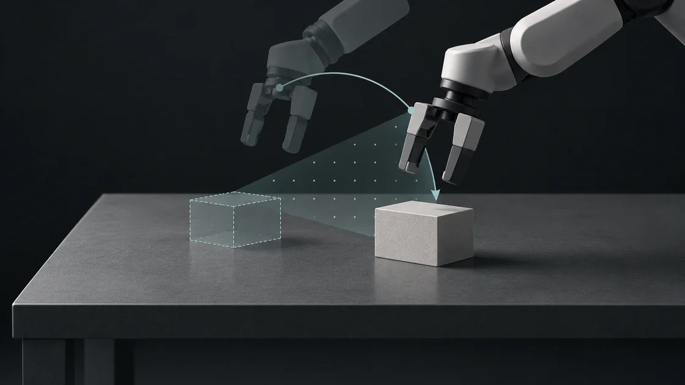

Grasp

Seoul National University · Visual Computing Lab
Visual perception for adaptive robot manipulation.
Undergraduate intern at the Visual Computing Lab.
01 / Research direction
I am interested in how robots use 3D visual information to grasp and rearrange objects, decide when to observe again, and adapt from the outcome.



02 / Publications
More work on Google Scholar ↗
03 / Experience
Jun 2026 — Present
Undergraduate intern
Seoul National University · Computer Science and Engineering
Aug 2025 — Apr 2026
Undergraduate intern
Seoul National University · AI Semiconductor Engineering
Jul 2024 — May 2026
Undergraduate intern
Seoul National University · Mechanical Engineering
04 / Education
Mar 2027 — Present
Seoul National University
Mar 2021 — Feb 2027
Seoul National University · GPA 4.12 / 4.30
05 / Honors
Jun 2026
Seoul National University · Mechanical Engineering
Aug 2025 — Present
Seoul National University
Aug 2024
ICEAS 2024
May 2023 — Present
Korea Student Aid Foundation
06 / Contact